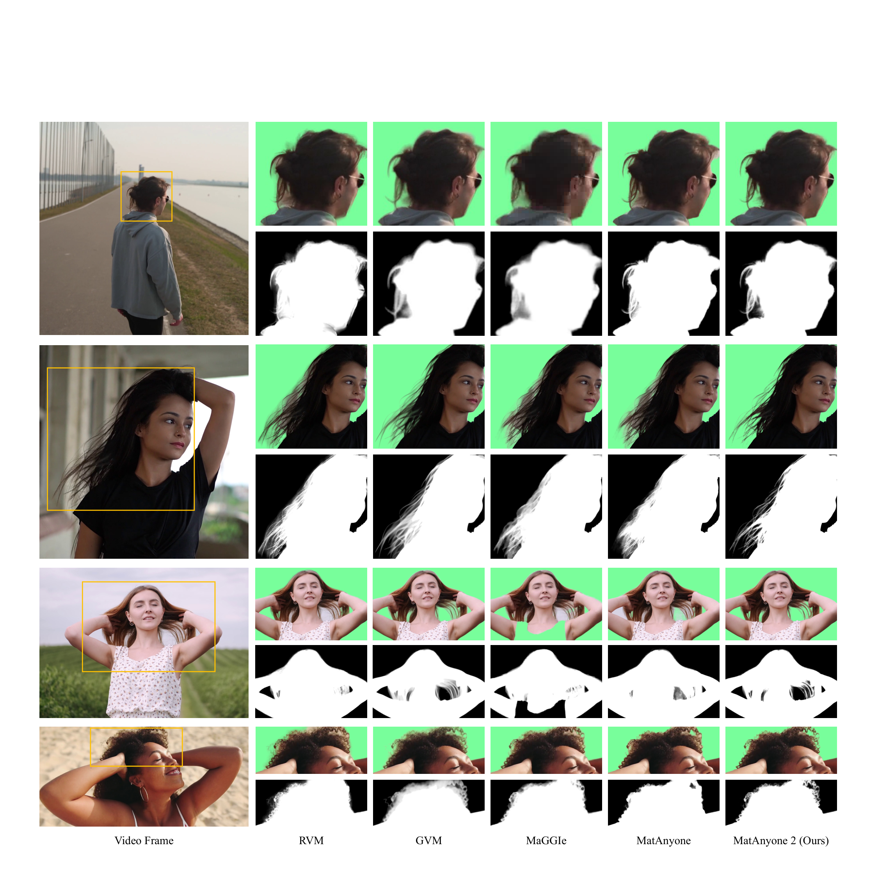

MatAnyone 2 深读：没有真值 alpha，怎么用一个"学出来的质量打分器"把视频抠像 scale 到 2.4M 帧？
导读。视频抠像（video matting）卡住的地方，从来不是网络结构不够花哨，而是数据本身：真实视频里逐帧手标 alpha（毛发级的半透明边界）几乎做不到，于是大家只能拿合成数据（前景抠出来贴随机背景）凑，光照与边界都不自然，模型一到真实背光、飞发场景就露馅。前作 MatAnyone 想用分割数据补数据缺口，但分割只在"非边界区"（alpha 取 0 或 1）能给可靠监督，边界区只能挂一个很弱的无监督损失——结果语义稳了，边界却退化成"分割味"的硬边。MatAnyone 2 的核心赌注是：与其继续在"合成 vs 分割"之间折中，不如先学一个不需要真值 alpha 的质量打分器 MQE（Matting Quality Evaluator），让它逐像素判断"这块 alpha 预测是可靠还是错的"，然后一鱼两吃——训练时当在线监督信号（错的地方罚、对的地方放过），离线时当数据仲裁器（融合视频抠像模型的语义稳定 + 图像抠像模型的边界细节），由此凑出 28K 片段 / 2.4M 帧的真实数据集 VMReal（比前作大约 35×）。立题问题因此很具体：当真值 alpha 根本拿不到，监督信号该从哪来——能不能"学一个评委"，既给训练打分、又给数据把关？第二条暗线是长视频：propagation 类方法只在局部窗口里有记忆，主体一旦露出之前没见过的部位（新举起的手、新掏出的杯子）就抠不出来，MatAnyone 2 用 reference-frame 策略把长程帧塞进记忆而不增显存。
pq-yang/MatAnyone2（HTTP 200，标注 CVPR 2026 Highlight）。
1. 核心问题：真值 alpha 拿不到，监督信号到底从哪来？
抠像要解的是 alpha matting：把每个像素分解成"前景占多少、背景占多少"，输出一张连续的 alpha 图 $\alpha\in[0,1]$。难点全在边界——发丝、半透明衣料、运动模糊处，alpha 是 0 到 1 之间的连续值，这正是"抠像"区别于"分割"（只有 0/1）的地方。可问题是：真实视频里这种毛发级 alpha 几乎无法逐帧手标，论文原话是"if not impossible at scale"。监督信号的缺失，是这一行所有麻烦的总根子。
历史上绕这个根子有三条路，论文逐条点了它们的破绽：
- 合成数据。把抠好的前景贴到随机背景上（RGBA blending）。规模能凑，但光照不一致、边界不自然，和真实视频存在 domain gap——模型一到真实挑战场景就掉链子。即便最大的合成集 VM800 也只有 826 段，约是 SAM 2 所用 VOS 数据（SA-V）的 1/60。
- 分割预训练。先在分割模型/数据上预训练再 finetune。但高质抠像数据太少，finetune 时预训练学到的分割能力反而会退化。
- 分割联合训练（前作 MatAnyone 走的路）。把分割与抠像监督塞进一个框架同时学。这里是全文动机的关键转折：分割数据只能在"非边界区"（alpha=0 或 1）给可靠监督，因为分割本身就只有 0/1 标签；而真正决定抠像质量的边界区，分割给不出连续 alpha 的监督，MatAnyone 只能挂一个依赖强假设的无监督损失。这条弱监督的后果是：语义/跟踪是稳了，但边界被往"分割味"硬边上拽（见图 1、图 2a）。
问题。三条路都卡在同一处——边界区没有可靠监督。那能不能换个思路：不去硬造真值 alpha，而是学一个"评委"，让它在没有真值的情况下，逐像素告诉我"这块 alpha 预测靠不靠谱"？
引导。如果真有这么个评委，它至少能干两件事：训练时，把它判为"错"的像素当成惩罚信号，等于凭空给边界区补上了监督；离线时，拿它当裁判去挑——视频抠像模型语义稳但边界糙、图像抠像模型边界利但语义飘，让评委逐像素选出各自靠谱的部分拼起来，就能自动标出高质量真实数据。
回答。这正是 MQE（Matting Quality Evaluator）。它把"缺真值"这个死结，转化成一个能学的二分类问题：每个像素，alpha 预测是"可靠(1)"还是"错误(0)"。一旦这张评估图能学出来，监督信号的来源问题就从"造真值"降级成"判对错"——后者用现成的图像抠像真值就能造伪标签训练。
Takeaway。MatAnyone 2 的根本动机不是又一个抠像网络，而是把监督信号的瓶颈外包给一个学出来的质量打分器。理解全文的钥匙就一句话：没有真值，就学一个判对错的评委，再让它一鱼两吃（在线监督 + 离线筛数据）。
2. 贡献拆解：作者明确提出的 vs 读者可顺势推断的
作者明确提出的三条贡献：
- 学出来的 MQE。无需真值 alpha，对预测 alpha 做语义 + 细节双重评估，逐像素输出可靠/错误图；既当训练在线监督，又当离线数据筛选模块，由此把视频抠像 scale 起来。
- VMReal 数据集。借 MQE 构建的大规模、场景多样、真实视频抠像数据集，约 28K 片段、2.4M 标注帧。
- reference-frame 训练策略。把局部窗口外的长程帧引入记忆，让模型在不增显存的前提下应对长视频里的大幅外观变化。
与前作 MatAnyone 的真正差别（图 2 是全文最该先看的一张图）：MatAnyone 靠分割监督补数据，可靠的只有 core 区（$L_{cert.}$），边界区是弱无监督（$L_{uncert.}$），且记忆被限在局部窗口；MatAnyone 2 改成"在 VMReal 真实数据上训练，每张 alpha 标签都配一张二值评估图"——可靠像素上算 masked 抠像损失 $L_{mat}$，MQE 再补一个 $L_{eval}$ 同时监督 core 与边界，外加 reference-frame 提供长程线索。

读者可顺势推断的点：这套设计的真正杠杆是"用一个可学的、逐像素的质量代理，替代手工真值"——它和近年低层视觉里用 IQA 模型造 DPO 数据对、用判别器挑高质样本是同一思路谱系，但 MQE 把粒度做到了逐像素 + 时序（图像级 IQA 给不了边界级、跨帧一致的评估），这是它能服务于"抠像"这一边界敏感任务的关键。需要强调：论文未声称 MQE 是通用 IQA，它只在"判 alpha 对错"这一窄任务上学，伪标签也只来自图像抠像真值。
3. 数据：MQE 的伪标签从哪来，VMReal 又是怎么凑出来的？
这一节有两套数据，别混：一套是训 MQE 用的伪标签，一套是MQE 反过来造出来的 VMReal。
3.1 训 MQE：用图像抠像真值造伪评估图
MQE 要学"判 alpha 对错"，可"对错"本身也没有现成标签。论文的做法：拿有真值 alpha 的图像抠像集 P3M-10k，对某个预测 $\hat{\alpha}$ 与真值 $\alpha_{gt}$ 算逐 patch 的差异分，差异小判可靠(1)、大判错误(0)。具体是把每张图切成 7×7 不重叠 patch，每个 patch 算抠像标准指标的加权组合（式 3，下节给），min–max 归一化到 [0,1]，再以阈值 $\delta=0.2$ 二值化。由于"错误"像素主要集中在边界、占比小，正负类极不平衡，故用 focal loss 强调难分的错误区。这里的关键假设是："在 patch 上 MAD/Grad 偏离大" 约等于 "这块 alpha 预测肉眼也错"——图 10 的 r=0.87 相关性就是来验证这个假设的。
3.2 VMReal：自动双分支标注 + MQE 仲裁
VMReal 的数据源有两块：(1) 从视频素材网站和 YouTube 自采的 4.5K 段 1080p 高清视频（发丝细节丰富）；(2) 其余源自 SA-V（SAM 2 用的大规模 VOS 数据）的人像子集，多为 720p，场景/运动/光照多样。SA-V 的 mask 没有语义标签且常是残体（只有头、只有上半身），论文用一套两阶段"过滤+合并"流程：先按 IoU>0.9 去冗余 mask，再用 OWL-SAM 以 "person" 文本提示做人像提名、把碎 mask 归并成完整人体 mask，丢掉非人或残缺的。
下表是论文 Table 4，VMReal 与既有数据集的对照（如实转写）：
| 数据集 | VM108 | VideoMatte240K | VM800 | SynHairMan | VMReal（本文） |
|---|---|---|---|---|---|
| #片段 | 108 | 484 | 826 | 200 | 28K |
| #帧 | 92K | 240K | 320K | 18K | 2.4M |
| 真实性 Realism | ✗ | ✗ | ✗ | ✗ | ✓ |

4. Pipeline：MQE 的两个角色，逐级拆开
MQE 训好之后，论文让它走两条独立的 pipeline。把每一步的"为什么需要 / 去掉会怎样"讲清楚，是理解全文的主线。
4.1 在线角色：训练时的逐像素打分器
对每个输入帧，MQE 先产出一张错误概率图 $P^{(0)}_{eval}$（每个像素 alpha 预测出错的可能性），它直接当惩罚掩码，鼓励网络压低错误概率。这一步替代的是 MatAnyone 边界区那个弱无监督损失——去掉它，边界区就退回"无人监督"状态，硬边复现（表 3a→b 验证）。

4.2 离线角色：双分支标注的质量仲裁器
离线这条线是 VMReal 的生产线（图 5）。两个分支天生互补：
- $B_V$（视频抠像分支，如 MatAnyone）：时序稳、整体结构稳，但边界细节糙。只需首帧分割 mask 指定目标，之后自行 propagate 出时序稳定的 alpha 序列。
- $B_I$（图像抠像分支，如 MattePro + 每帧 SAM 2 mask）：边界锐、细节足，但逐帧独立做、时序飘、语义不一致。
MQE 当裁判：分别给两支的 alpha 出评估图 $M^{eval}_V$、$M^{eval}_I$，以稳的 $B_V$ 为底，只在"$B_V$ 错（$M^{eval}_V{=}0$）但 $B_I$ 对（$M^{eval}_I{=}1$）"的区域，把 $B_I$ 的边界细节选择性融进来（融合掩码 $M^{fuse}=M^{eval}_I\odot(1-M^{eval}_V)$，再做高斯平滑避免接缝）。


5. 方法：把每个损失放回它要解决的问题里
这一节按 kexue:su 的姿态来写——先讲每个式子为什么需要，把关键假设显式标出，并尽量从两个角度交叉验证同一结论。
5.1 MQE 的伪真值：差异度量与二值化（式 3–4）
要把"alpha 对不对"变成可学标签，先得有个差异度量 $D(\cdot)$。论文在 7×7 patch 内算抠像两大指标的加权组合：
公式读法 + 动机。为什么是 0.9/0.1 而不是各半？因为"语义判错"（大块错）比"边界略糙"严重得多——一块前景整片丢了，比发丝差一点致命，故主权重给 MAD。这是个设计选择，不是推导出来的最优，论文用经验值。二值化随之而来：
隐含假设（显式标出）。这一步默认"patch 级指标偏差大 ⇔ 该 patch 的 alpha 肉眼也错"。这个等价不是天然成立的——它要求 MAD/Grad 与"感知质量"足够相关。论文没有把它当显然，而是单独用图 10 去验证（r=0.87，见 §8）。这是一条独立验证路径：式 3–4 是构造，图 10 是事后检验，两头对上才算这套伪标签可信。
5.2 MQE 训练损失：focal + dice（式 5–6）
"错误"像素主要在边界、占比小 → 类别极度不平衡。直接用交叉熵，网络会偷懒全判"可靠"。论文上 focal loss 把难分样本（罕见的错误像素）的权重抬上来：
公式读法。$(1-p)^{\gamma}$ 这个调制因子是 focal loss 的灵魂：当某像素已被自信判对（$p\to1$ 且 $y{=}1$），$(1-p)^{\gamma}\to0$，它对损失几乎不贡献——梯度自动让位给那些判错或没把握的像素。$\gamma=2$ 控制这种"让位"的陡峭程度。再叠一个 dice loss 稳定区域级重叠：
5.3 在线引导损失：把评估图当惩罚（式 11–12）
训练抠像模型时，MQE 对每帧预测 alpha 产出错误概率图 $P^{(0)}_{eval}$。在线引导损失就是直接压它的 $\ell_1$ 范数：
两条独立路径交叉验证"它为什么比前作强"。路径一（自上而下直觉）：MatAnyone 边界用的是依赖强假设的无监督损失，信号弱；MQE 是从图像抠像真值学出来的，等于把"边界该长什么样"的先验蒸馏进了一个打分器，再回灌给训练——监督从"无人区"变成"有评委盯着"。路径二（自下而上对照）：表 3a→b 单加 $L_{eval}$，提升最明显的恰是语义（MAD/MSE）与细节（Grad）指标，正好对应 MQE 同时评"语义 + 细节"两类病（图 4a/b）。两条路指向同一结论：$L_{eval}$ 的增益来自它给边界区补上了可靠监督。最终总损失把它和主抠像损失按 0.1 权重相加：
5.4 masked 抠像损失：只在可靠像素上算（式 7–10）
VMReal 每个样本是三元组 $\langle I_{rgb},\alpha,M^{eval}\rangle$，$M^{eval}{=}1$ 标记可靠像素。关键设计：主抠像损失只在可靠区算——因为标注本身（由 $B_V/B_I$ 融合而来）在不可靠区可能也是错的，硬监督反而会教坏模型。令可靠掩码 $R_t=\mathbb{I}(M^{eval}{=}1)$，masked L1 与 Laplacian 损失为：
公式读法。$R_t\odot$ 是这套损失的总开关：不可靠像素被乘成 0、不进梯度。Laplacian 金字塔损失（式 8）同理逐层加 mask，抓多尺度边界细节；时序一致损失（式 9）只在连续两帧都可靠的像素上算（$R_t^{tc}=R_t\odot R_{t-1}$），约束 $\Delta\hat{\alpha}$ 贴近 $\Delta\alpha$、压闪烁。三者合成 masked 抠像损失：
5.5 reference-frame 策略：长程记忆不增显存
长视频里主体外观会大幅变（露出新部位）。propagation 类方法（MatAnyone）训练时只见短序列（如 8 帧），记忆只存局部窗口，没法建模这种大变化；硬把窗口拉长（如 40 帧）显存爆炸。论文的解法是 reference-frame：把局部窗口之外的长程参考帧引入记忆，按 ProPainter 的训练方案，扩展时序上下文而不增显存。
但采样是概率性的，不保证抽到的参考帧外观差异够大。于是再加一个 random dropout 增强：由于"没见过的区域"通常出现在物体边界附近，就在参考帧的边界区随机抠掉 0–3 个 patch、非边界区 0–1 个（patch 边长在 [50,100] 随机），RGB 与 alpha 对应区域都置零。这等于人为模拟"参考帧里某些部位缺失、当前帧才出现"的长视频场景，逼模型学会处理 unseen 区域，而不是过度依赖历史记忆。

6. 训练账本：算力、配置、损失权重
论文明确披露的训练配置如下（缺的地方标"论文未说明"）：
| 项目 | 抠像模型 | MQE 模型 |
|---|---|---|
| 硬件 | 8× A800-80G | 8× A800-80G |
| batch size | 16 | 16 |
| 训练片段 | crop 到 480×480、8 帧 | —（图像级，P3M-10k） |
| backbone | 沿用 MatAnyone | DINOv3 编码器 + DPT 解码器（仿 Depth Anything） |
| 迭代数 | 论文未说明 | 80K iterations |
| 学习率 | 论文未说明 | 编码器 $3\times10^{-6}$，解码器 10×（即 $3\times10^{-5}$） |
| 关键权重 | $L_{eval}$ 权重 0.1（式 12） | focal $\gamma{=}2,\alpha{=}0.25$；差异阈值 $\delta{=}0.2$ |
算力粗估（声明）。论文只给了"8× A800-80G、batch 16"，未公开训练总时长。若硬要按卡数估一个量级，需要 epoch/步数与单步耗时——抠像模型这两项论文未说明，故无法给出可信 GPU-hours。任何由此外推的 GPU-hours 仅为按论文披露数字的粗略估算，不等同于实际账单。另需注意：训练用 VMReal，但论文未说明数据集是否公开发布，这是复现的硬门槛之一。一个值得记的设计是：用了 VMReal 后，不再做抠像 + 分割的联合训练——所有样本都被标注 pipeline 统一成三元组，从源头避开了"分割监督带来分割味"的老问题。
7. 实验：这些表到底支撑了哪条主张？
7.1 合成基准全指标第一（表 1）
表 1 在 4 个合成基准（VideoMatte / YoutubeMatte 各两档分辨率）上比，指标含 MAD/MSE（语义）、Grad（细节）、dtSSD（时序）、Conn（感知）。这张大表要支撑的结论是：MatAnyone 2 在所有基准、所有指标上都拿第一或并列第一。下面转写代表性两档（512×288 与 1920×1080 的 VideoMatte / YoutubeMatte），完整表见原文。
| 基准 / 指标 | RVM | GVM$^*$ | MaGGIe$^\dagger$ | MatAnyone | Ours |
|---|---|---|---|---|---|
| VideoMatte 512 · MAD↓ | 6.08 | 6.39 | 5.49 | 5.15 | 4.73 |
| VideoMatte 512 · Grad↓ | 0.88 | 0.72 | 0.57 | 0.67 | 0.51 |
| VideoMatte 1080 · MAD↓ | 6.57 | 6.33 | 4.42 | 4.24 | 4.10 |
| VideoMatte 1080 · Grad↓ | 10.55 | 8.04 | 4.03 | 4.00 | 3.45 |
| YoutubeMatte 512 · MAD↓ | 4.08 | 3.30 | 3.54 | 2.72 | 2.30 |
| YoutubeMatte 1080 · MAD↓ | 4.37 | 2.68 | 2.37 | 1.99 | 1.61 |
| YoutubeMatte 1080 · Grad↓ | 15.10 | 8.38 | 7.69 | 8.91 | 7.14 |
读这张表的关键不是"又赢了"，而是赢在哪：本文是纯 CNN、只需首帧 mask，却压过了有扩散先验的 GVM 和需每帧 mask 的 MaGGIe——说明增益来自数据与监督（VMReal + MQE），而非更重的架构或更强的输入条件。
7.2 真实基准：泛化才是终极考题（表 2）
合成赢不算数，真实视频才是。CRGNN 是 19 段真实视频、每 10 帧手标真值 alpha 的基准。这张表要支撑的是跨真实场景的泛化。
| 方法 | MAD↓ | MSE↓ | Grad↓ | dtSSD↓ |
|---|---|---|---|---|
| RVM-Large | 5.75 | 2.47 | 13.26 | 5.17 |
| GVM（扩散） | 5.03 | 2.15 | 14.28 | 4.86 |
| MaGGIe | 9.50 | 6.11 | 16.51 | 6.02 |
| MatAnyone | 5.76 | 3.04 | 15.55 | 5.44 |
| MatAnyone 2（Ours） | 4.24 | 2.00 | 11.74 | 4.54 |
相对前作 MatAnyone，论文报告 Grad 与 Conn 各降 27.1% / 22.4%（在合成主表上的统计）；真实基准上各指标也全面领先，尤其 Grad（细节）从 15.55→11.74。结论：VMReal + MQE 的增益在真实分布上没有塌掉，这才是这套数据-监督设计真正的价值证明。

{kind=link}

8. 消融：提出的机制，是否真能解释结果？
8.1 三件套逐项加，单调变好（表 3）
表 3 以 MatAnyone 为 baseline（exp a），逐项叠加 $L_{eval}$（在线引导）、VMReal（数据）、reference-frame（长程记忆），在 YoutubeMatte 1080 上看。这张表要回答的是：三个贡献各自有没有用、是不是叠加有效。
| Exp. | $L_{eval}$ | VMReal | Ref. Train | MAD↓ | MSE↓ | Grad↓ | dtSSD↓ |
|---|---|---|---|---|---|---|---|
| (a) MatAnyone baseline | 1.99 | 0.71 | 8.91 | 1.65 | |||
| (b) | ✓ | 1.90 | 0.62 | 8.20 | 1.63 | ||
| (c) | ✓ | ✓ | 1.76 | 0.61 | 7.65 | 1.54 | |
| (d) MatAnyone 2 | ✓ | ✓ | ✓ | 1.61 | 0.50 | 7.13 | 1.53 |
三处增益各对应一个机制主张：(a→b) 单加 $L_{eval}$，语义（MAD/MSE）与细节（Grad）齐降——印证 MQE 在线监督同时补了 core 与边界（对应图 4a/b 两类病）；(b→c) 加 VMReal，各指标继续降——印证真实数据本身就是强监督；(c→d) 加 reference-frame，提升集中在语义准确（MAD/MSE），且不增显存——印证它补的是长视频 unseen 区域（对应图 7、图 12）。三条机制各管一摊、互不抢功，消融与机制叙事是对得上的。
8.2 VMReal 对别的模型也涨（表 6，跨模型验证）
一个更硬的验证：把 VMReal 拿去训另一个模型 RVM，看是否同样涨。这是排除"VMReal 只是恰好适配本文 backbone"的替代解释。
| 方法 | 512·MAD↓ | 512·MSE↓ | 1080·MAD↓ | 1080·MSE↓ |
|---|---|---|---|---|
| RVM（w/o VMReal） | 4.08 | 1.97 | 4.27 | 2.25 |
| RVM（w/ VMReal） | 3.32 (−0.76) | 1.34 (−0.63) | 3.37 (−0.90) | 1.51 (−0.74) |
RVM 加上 VMReal 后各指标一致下降——VMReal 是可迁移的监督信号，不绑定本文模型。这条跨模型证据，比单看本文涨点更能支撑"数据是核心杠杆"的主张。
8.3 MQE 本身可信吗？相关性 r=0.87（图 10）
整套设计的地基是"MQE 真能判对错"。论文把 173 万个 patch 按真值 discrepancy 分 30 桶，画 MQE 预测的 class-0 概率均值。这张图要验证的是 §5.1 那个隐含假设。

8.4 为什么必须双分支（表 5，反证 $B_I$ 单用不行）
论文还反证了"为什么不能只用边界更利的图像分支 $B_I$"：把 $B_I$（SAM 2 + MattePro）单独拿去测视频基准，结果显著差于视频分支 $B_V$（MatAnyone）。如 VideoMatte 512 上 $B_I$ 的 MAD 8.96、dtSSD 2.36，而 $B_V$ 是 5.15 / 1.18——$B_I$ 逐帧抖、语义飘。这正是"以 $B_V$ 兜底、只选择性补 $B_I$ 边界"这一设计的依据。
9. 局限与复现门槛
- 标注质量被现成模型上限锁死。论文自己点明：标注 pipeline 自适应融合了 SOTA 图像/视频抠像模型的长处，但整体质量仍被这些模型的能力封顶。$B_V$、$B_I$、SAM 2、MattePro 哪个有系统性盲区，VMReal 就会继承。作者把"数据-模型 refinement flywheel（迭代精炼闭环）"列为 future work，并说这需要可观工程与算力，故未做。
- MQE 的伪标签来自图像抠像真值（P3M-10k），且只评人像。VMReal 与评测全是 human-centric。论文未声称对非人主体（动物、透明物、烟雾）有效——超出人像分布时 MQE 与整套数据是否成立，论文未说明。
- MQE 高 discrepancy 区饱和、偏保守。图 10 显示 $D>0.5$ 时预测饱和到 1.0，意味着在"极不可靠"区它倾向多报错。论文论证这对监督量影响小，但这本身是 MQE 在极端区分辨力下降的体现。
- 评测的非参考指标依赖 MQE 自身。真实视频无真值时，论文用 MQE 自己产出的评估图定义 ERR/MER/BER 指标（表 7）。这是自评估——MQE 既当被验证对象、又当评测尺子，存在循环，需谨慎解读（论文也强调这些只是无参考"指示"，趋势与有参考指标对齐）。
- 复现门槛。训练需 8× A800-80G；训练总时长、抠像模型的迭代数/学习率论文未说明。VMReal 是否公开发布论文未说明——若不放出，这套结果的核心资产（数据）难以复现。代码仓
pq-yang/MatAnyone2在线（HTTP 200）。

10. 结语与三条 takeaway
一句话。MatAnyone 2 把视频抠像的真正瓶颈（缺真值 alpha）转译成一个可学的逐像素质量打分问题，再让这个 MQE 评委一鱼两吃——在线给训练补监督、离线给数据当裁判——从而把真实视频抠像数据 scale 到 2.4M 帧。
- Takeaway 1（机制内核）。当真值拿不到时，学一个判对错的代理比硬造真值更可行——前提是这个代理可被独立验证（图 10 的 r=0.87 是地基）。这套"质量打分器当监督源"的思路可迁移到其他缺标注的稠密任务。
- Takeaway 2（数据是杠杆）。纯 CNN、只需首帧 mask，却压过扩散式 GVM 和每帧 mask 的 MaGGIe，且 VMReal 拿去训 RVM 也涨——增益来自数据与监督，不是更重的架构。
- Takeaway 3（边界 vs 语义不必二选一）。前作"分割补数据"导致语义稳但边界糙的折中，被"双分支 + MQE 仲裁"打破：稳的视频分支兜底、利的图像分支补细节，由评委逐像素裁决——这是全文最值得借鉴的工程范式。
建议阅读路径：图 2（两代差别）→ §1 核心问题 → 图 5/9（离线双分支怎么造数据）→ §5.1–5.3（MQE 与 $L_{eval}$）→ 表 3（消融逐项）→ 图 10（MQE 地基）→ §9 局限。
资料来源与图像说明
- Peiqing Yang, Shangchen Zhou, Kai Hao, Qingyi Tao. MatAnyone 2: Scaling Video Matting via a Learned Quality Evaluator. CVPR 2026 (Highlight) / arXiv:2512.11782v2（S-Lab, Nanyang Technological University · SenseTime Research）。项目页：
pq-yang.github.io/projects/MatAnyone2/；代码：github.com/pq-yang/MatAnyone2（HTTP 200，仓库标题标注 "[CVPR 2026 Highlight]"）；CVF openaccess 页面可解析（HTTP 200）。 - 本文全部公式（式 3–12 选录）、表格（Table 1/2/3/4/5/6）与实验数字以 arXiv PDF 为准。表 1、3、6 为代表性行转写（原表更宽，含 MODNet/RVM-Large/AdaM/FTP-VM 等更多列与 MSE/dtSSD/Conn 等更多指标），已在各表标题注明"代表性行"。MQE 校准 r=0.87 与 173 万 patch 统计、reference-frame 的 dropout 细节（边界 0–3 patch / 非边界 0–1 patch、边长 [50,100]）均出自补充材料 §A/§C。
- kexue:su 方法与归因。第 1、5、8 节"监督信号从哪来""$L_{eval}$ 为何胜过弱无监督""伪标签假设如何被 r=0.87 坐实""为何必须双分支"等多路径论证，按
kexue:su方法（动机先行、假设显式、≥2 路径交叉验证、重新推导而非罗列）展开。本次kexue:su检索语料库为空（0 卡片、无 BM25 索引），未返回任何相关卡片，故全程仅应用方法、未作任何 [archives/XXXX] 归因——focal loss、DINOv3、DPT、SAM 2、ProPainter、P3M-10k 等均按其各自原始论文理解，未借苏剑林博客二次归因。 - 图像说明：图 1/2/4/5/6/7/8/10/11 为本地 PNG，由
extract_figures.py（PyMuPDF，caption 锚定）从 arXiv PDF 裁切；图 9（双分支序列，p15）与图 12（长视频鲁棒性，p20）因图形位于 caption 下方、被锚定提取器跳过，改用 PyMuPDF 按页面坐标直接裁切（已剔除溢出文本带），均为 300 DPI 原生分辨率。图 3（MQE 输入输出简图）与补充表 Table 7（自评估 ERR/MER/BER）信息已在正文以文字/公式转述，未单独配图。路径assets/figures/matanyone2/。